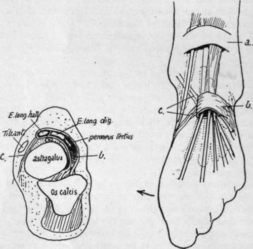
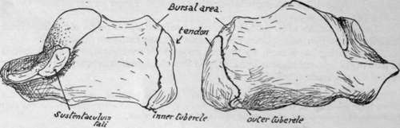

Os Calcis
Description
This section is from the book "The Anatomy Of The Human Skeleton", by J. Ernest Frazer. Also available from Amazon: The anatomy of the human skeleton.
Os Calcis
The upper aspect shows that the astragalus is carried on the anterior half of the bone : behind this the upper surface is covered by the fatty tissue that lies between the tendo Achillis and the ankle.
The astragalus facet on the body is convex, while the anterior one is concave. This last carries the head of the astragalus, and is situated on the sustentaculum and the front part of the body of the bone : it is frequently divided, more or less completely, into two, that on the sustentaculum being termed the middle (astragalar) facet and the remainder being the anterior facet. These are separated from the posterior facet by the interosseous sulcus, which widens out externally. The astragalar facets have their long axes put obliquely across the os calcis, so that the astragalus is directed inwards and forwards with reference to this bone and can only move in that direction, sliding on the calcaneum. It follows from this that the upper and front part of the os calcis must be exposed externally, and it is from this part, to the outer side of the astragalus, that the Extensor brevis digitorum takes origin : behind it, and fused with its origin, the lower part of the annular ligament is attached to the os calcis.
The anterior annular ligament is usually described as consisting of two bands, of which the upper is a simple transverse thickening of the deep fascia in front of the lower part of the leg, while the lower part, situated on the foot, is Y-shaped and on a deeper plane than the deep fascia. This lower band is not simple : the single limb of the Y is really a strong loop that passes round the extensor tendons of the digits and holds them from the outer side so that they do not slip inwards when the foot is inverted, and the diverging limbs act simply as riding lines for the loop, holding it in position as the tendons move, but not concerned in preventing any displacement of the tendons (Fig. 146).
From this description it follows that the loop must be strongly fastened externally, whereas the diverging bands need not be strong, and may go over or under the Tibialis anticus tendon ; frequently one is superficial and the other deep to the tendon. The attachment of the loop, as seen in the scheme, is to the os calcis and astragalus, and on the os calcis it is continuous with the origin of the short extensor : the two structures appear to be developed from the same continuous mass of cells in the embryo. The loop may surround the long extensor of the great toe as well as the common extensor, with a septum between them, or this may be modified in degree so that the main loop takes the common extensor and Peroneus tertius, and a secondary loop takes the extensor of the hallux : there is no essential difference in the arrangement. All the tendons running through the loop are in synovial sheaths ; the Tibialis anticus tendon is the only one that may have a sheath as it passes under the upper or leg band, because it is the only one that may be purely tendinous.
Fig. 146.-Diagrams to illustrate the structure of the anterior annular ligament. On the right the upper band is seen as a simple strap, a., across the tendons, but the lower portion is a strong loop, which holds most of the tendons so that they cannot move out of position when the foot is turned in ; thus this loop must be fastened on the outer side of the foot, and the two" stays," c, which keep it from riding up and down, do not require to be strong. A scheme of the arrangement as seen on section is on the left ; observe that the loop is strongly fixed to the os calcis and astragalus in the sinus tarsi, forming an attachment continuous with the interosseous ligament. From this region the loop passes over the astragalus to surround the tendons, with the exception of the Tibialis anticus ; the vessels and nerve lie deep to it.
The sustentaculum tali has the internal lateral ligament of ankle fastened to its thick inner border, and the inferior calcaneonavicular ligament further forward : these two ligaments are continuous in front of and internal to the sustentaculum, where they form part of the capsule for the head of astragalus. The groove below the process is a continuation of the postero-internal groove on the astragalus : it is lined by a synovial sheath surrounding the tendon of Flexor longus hallucis, shown in Fig. 147.
The inner surface of the body is practically covered by the origin of the inner head of Flexor accessorius, whose limits can as a rule be easily made out on the bone.
This limiting line is made by the thin aponeurosis covering it, which is described as part of the internal annular ligament, and thus the ligament is brought to the inner side of the calcanean tuberosity.
It would probably be more accurate to confine the description of annular ligament to the strong band covering the tendons and vessels, thus making its lower attachment on the line that runs along the outer border of the groove below the sustentaculum.
The outer surface presents a tuberculated point for the middle fasciculus of the external lateral hgament. The peroneal tendons turn forward superficial to this band and diverge to their insertions, so that the area in front of the ligamentous tubercle is covered by these tendons, whereas the back part of the surface is only covered by the fibro-fatty subcutaneous tissue at the side of the heel. The peroneal area may show a groove for the long tendon running to the lower corner of the surface, and above this there is frequently a ridge or tubercle that separates this tendon from that of Peroneus brevis.
The hinder aspect of the bone shows two surfaces, upper and lower, facing in different directions. The lower is vertically striated and ends above in an irregular ridge, affording attachment to the tendo Achillis : above this there is an area for the tendon, and above this again the bone is smooth and covered by a bursa deep to the tendon. The bursa extends a little way on to the upper surface as a rule.
Lower surface has a concave depression at its front end and internally for fibres of the short plantar ligament : behind this the broad keel of the bone is covered by, and gives attachment to, fibres of the long plantar ligament, almost as far back as the tuberosity. The pointed outer head of Flexor accessorius arises from the outer margin of this region, fused with the ligamentous fibres.
The tuberosity has a prominent lip which marks the attachment of the plantar fascia. The short muscles of the superficial layer of the sole are immediately deep to this, and their attachments to the bone are fused with the fascia on the ridge and also on the bone in front of this : they overlap one another from within outwards as seen in the figure.
Abductor hallucis, from the inner tubercle, extends its origin from this on to the fascia covering the inner head of Flexor accessorius, and thus gets an extensive origin from the annular ligament and covers the structures entering the sole here. This origin may extend as far as the tuberosity of the scaphoid, from which the muscle may even obtain a small origin.
In addition to the ligaments mentioned in connection with the bone, the markings for others can be found on the various surfaces as indicated in the figures. Attention may be called particularly to the calcaneo-cubo-navicular and the internal talo-cal-canean band (Fig. 147).
The bone rests solely on its tuberosity, with its front portion raised from the ground. Its concavo-convex facet for the cuboid has its upper lip overhanging and thus resting on the cuboid : this keeps the bone from sliding up on the calcaneum, so that any flattening of the outer arch can only occur with stretching of the long and short plantar ligaments, thus increasing their efficiency.
The bone is the only tarsal member that normally possesses an epiphysis : this is situated on its hinder part (Fig. 148) and is a traction epiphysis for the tendo Achillis. It is considered to correspond with the pisiform in the hand.
Fig. 148.-Right os calcis showing the epiphysis.
The bone is very vascular, and several small foramina can be seen on its sides : those on the inner side are largely arterial, with venous exit on the outer side.
It is partly ossified at birth.
Continue to:
- prev: The Foot. Part 4
- Table of Contents
- next: Cuboid